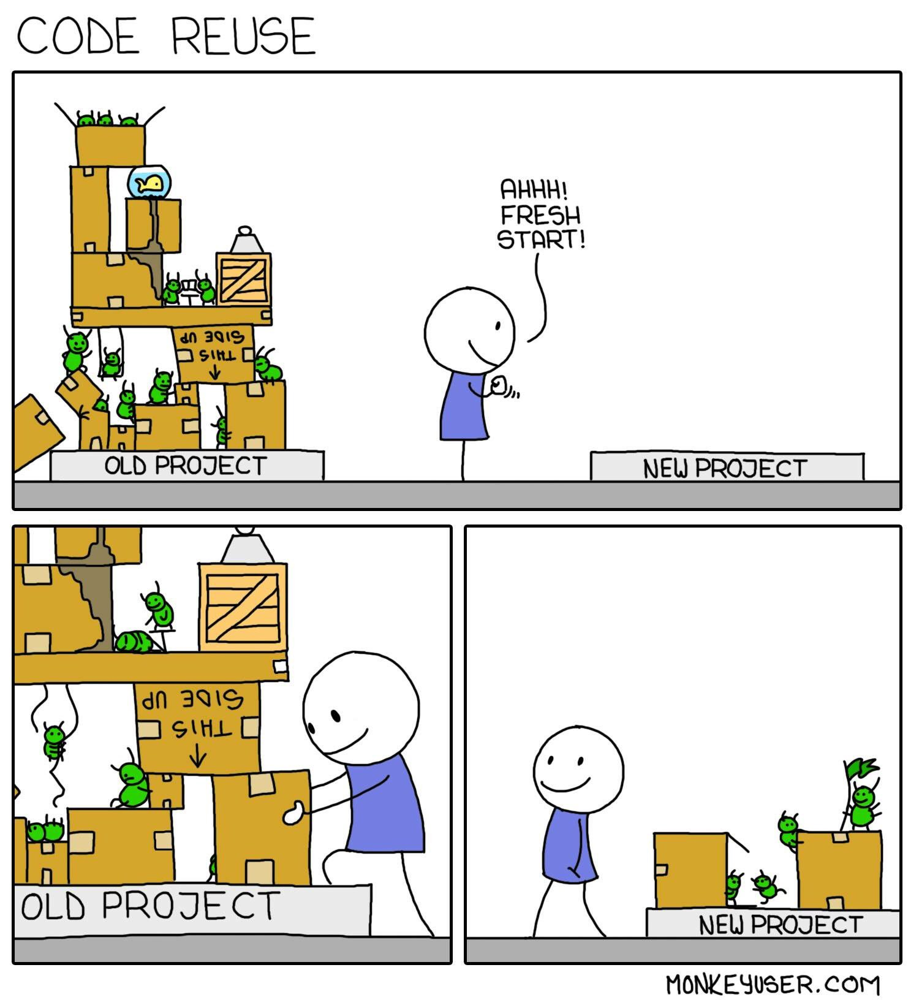

C++ Everywhere with
WebAssembly
Damien Buhl (alias daminetreg) at nxxm.github.io
WebAssembly
- Binary instruction format
- Stack based vm
- Enables C++ web browser & server apps
v1.0 available everywhere


WebAssembly Primer
Portable Binary instructions
- Small files
- Fast decoding
- Reduced memory usage
- asm.js & PNaCl synthesis
Binary format
- Simple type set
- Fast decoding
- Reduced memory usage
No more code pallets lifting

C++ Builds: Arts and Crafts
- Meta Build Systems failed simplifying builds.
- Continuous Integration config files : Jenkinsfile, Travis-CI, AppVeyor.
- Hours of development time lost in writing recipes.
C++ Builds: Industrializing and scaffolding
- Let's use that time to write code.
- The Web did it.
- C++ can do it too.
2 hard realizations and 1 dream
- The C++ ecosystem is fragmented.
- Nobody wants yet-another-config file.
- The Dream that code is self-sufficient.
So... what is nxxm ?
More or less a Compiler connected to github.com.
So... it's purpose ?
Dependency & Secure upgrade management via github.com.
Key Benefits
- Easy code reuse.
- Supports any build system.
- Perfectly integrated in development tools.
- Builds by convention.
Key Features
- Zero installation needed.
- Zero config file: #include scanning.
- Zero dependency store: relies on github.com.
Killer Features
- Standalone project directory.
- CMake, Travis-CI & AppVeyor config generation.
- Software upgrade management.
- Simplistic UI to get started.
- Visual Studio Code Integration.
Demo
- Let's write an hello-world.
nxxm == merge(inglued + headerizer)
#include <nxxm/github.com>
#include <boost/algorithm/string/predicate.hpp>
// Download & dependency registration : cmake, ci...
void on_login(std::string username) {
using namespace boost::algorithm;
if starts_with(username, "😇") {
let_him_in();
}
}
Economic Model
| Community | Pro | Enterprise |
|---|---|---|
| Base Features |
|
|
| Free | 7€ / month by user | 5000€ / year for 20 User seat pack |
Copying npmjs

Our market
Source: C++ Developer Survey "Lite": 2018-02, 3200 respondents.
Dependencies
Describe something you need to do regularly when writing C++ code that you wish could be easier in some way?

Source: C++ Developer Survey "Lite": 2018-02, 3200 respondents.
Why not just dependencies ?
Upgrade management and easy-rollout is a killer for the main development field.

Source: C++ Developer Survey "Lite": 2018-02, 3200 respondents.
The rise
Percolating in other languages.

Source: C++ Developer Survey "Lite": 2018-02, 3200 respondents.
Do they have money ?
They do.

Source: C++ Developer Survey "Lite": 2018-02, 3200 respondents.
We can do it.
- npm, Inc. is a company founded in 2014. Its executive team is:
Isaac Z. Schlueter, CEO
Laurie Voss, COO
CJ Silverio, CTO
Roadmap
Release 1 planned by Mid of June on the basis of inglued.
The Roadmap is easy and clear, there is nothing unknown. See here.
nxxm needs your help
- We can release early and fast: Mid of June.
- We can dogfood the tool then :
- Looking for contract customers: 20%.
- contract work using the tool: 40%.
- improve the tool: 40%.
- While no-contract we can build-up slight.li further.
It's what the devs want
- There already is 7 stars on inglued, with zero-marketing.
- Neither Hunter, Conan nor Vcpkg are really getting used.
- Because it's easy & programming language knowledge suffice.
You are welcome
This is a starting point for cashing-in.
It is the WebAssembly deps manager...